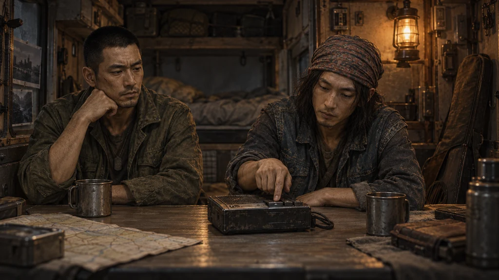
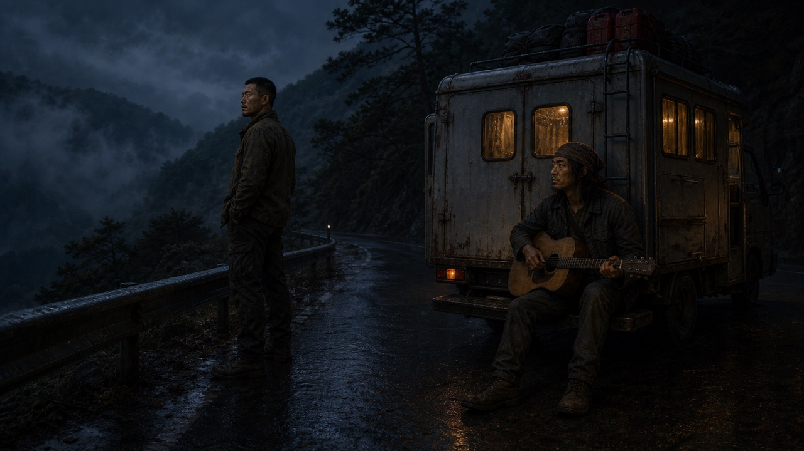
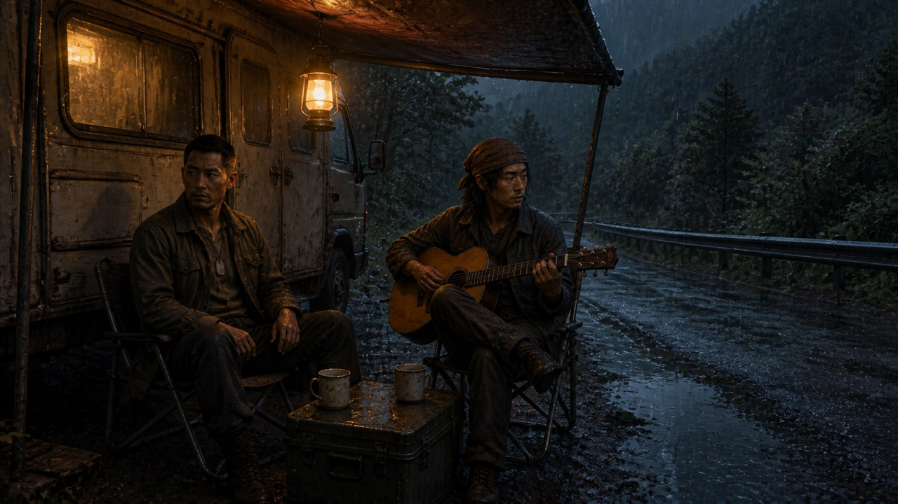

대사·행동 일치 검수 / 전용 그림 초안
연주가 아니라, 한 번 더 듣기.
강우가 녹음된 조용한 곡을 한 번 더 청하고, 레오가 재생 버튼을 누르는 순간입니다.
검토용 초안 · 사용자 승인 · 게임 소스 연결 · 실제 화면 적용·크롭 확인 대기
pair_kw_leo_1
강우의 첫 신청곡

“한 번 더.” 레오는 버튼 위에 손을 얹고 잠깐 웃었다. 강우가 앞을 보는 동안 같은 곡을 다시 틀었다.
두 사람이 합류한 사건의 선택 결과에 연결한 컷입니다. 본문 첫 대화는 아직 곡을 틀기 전이므로 새 그림을 선택 전부터 보여 주지는 않습니다.
기존 그림과 비교


교체 전 남은 확인
원본·배포본의 행동·인물·화풍과 16:9 규격을 확인했습니다. Studio 창과 실제 게임 크롭은 접근 제한으로 확인하지 못했습니다. 승인을 받은 뒤 해당 결과 단계에만 연결하고 현장 검수를 진행합니다. 초안 선택은 적용이나 저장 변경을 실행하지 않습니다.
검증키 · 수원 상자 · 남산 밤·새벽·정비 단말